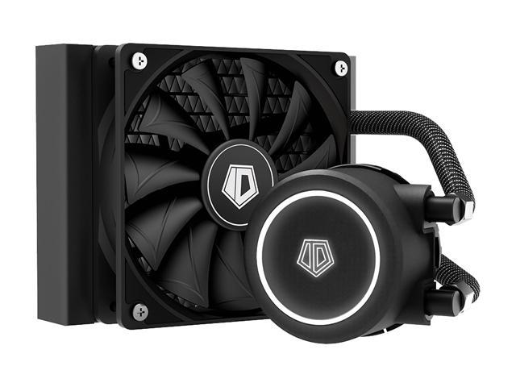
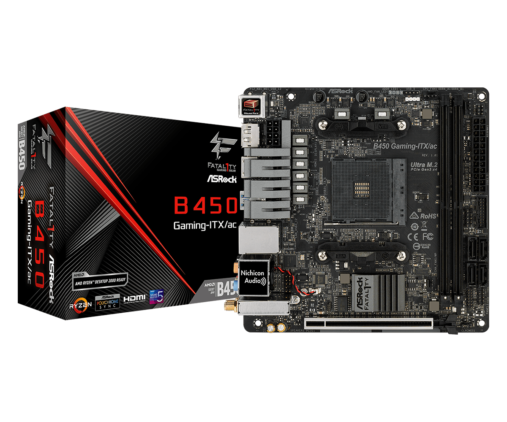
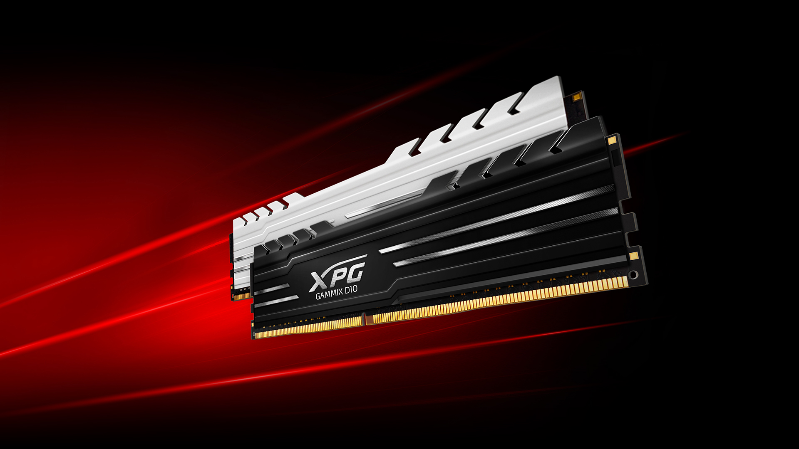
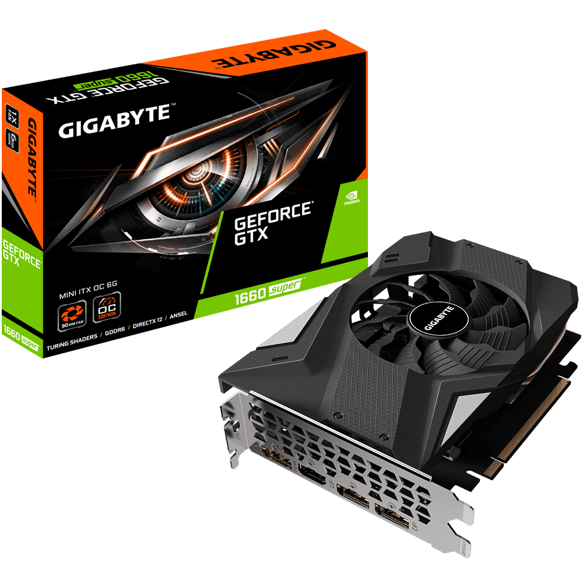
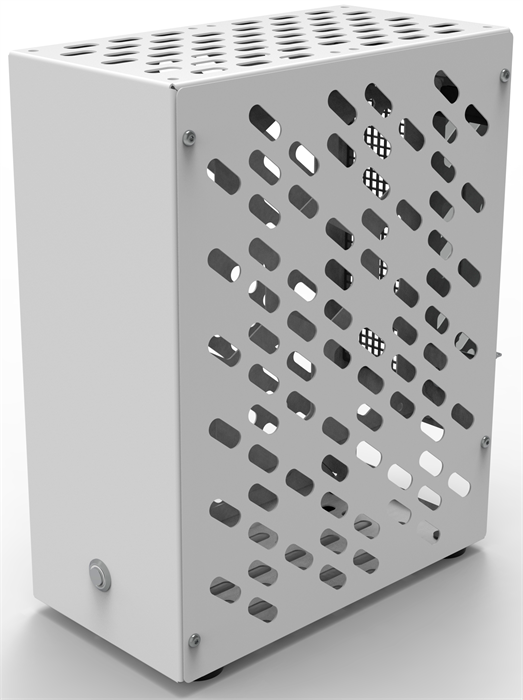
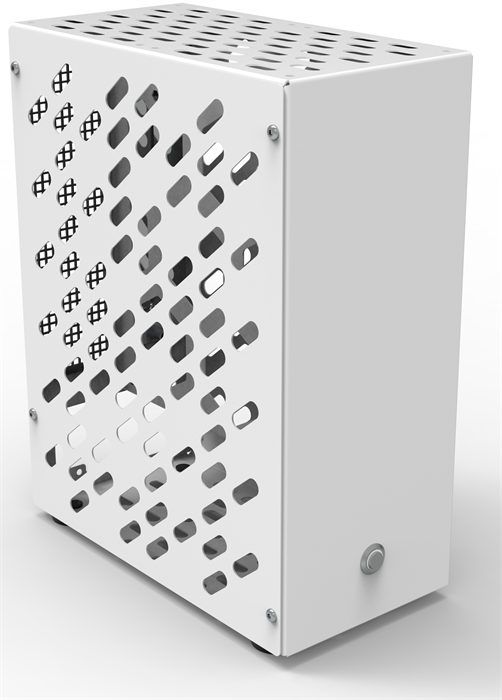
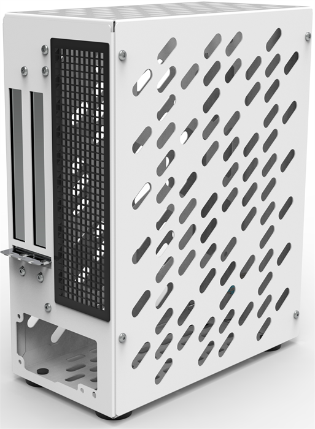
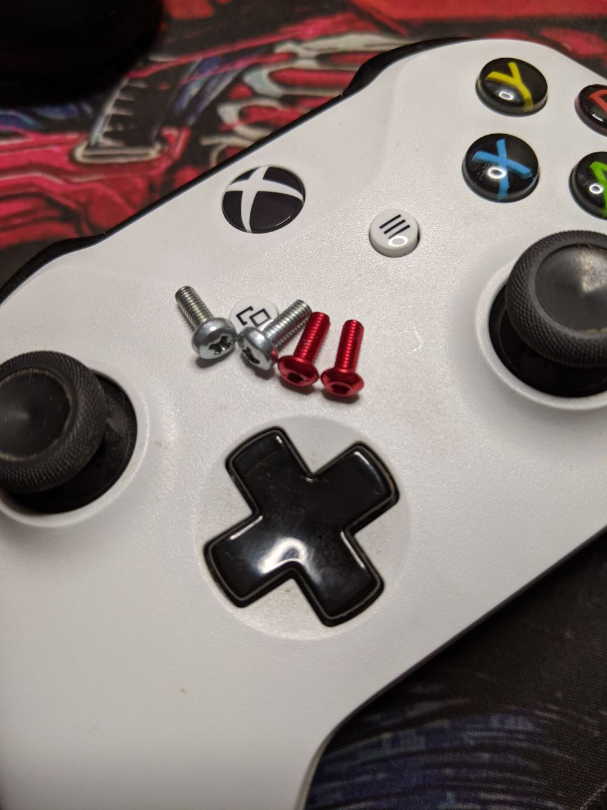
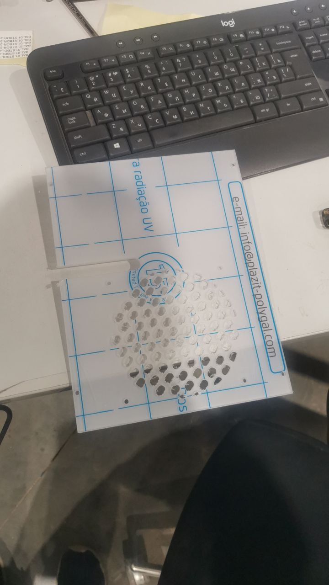
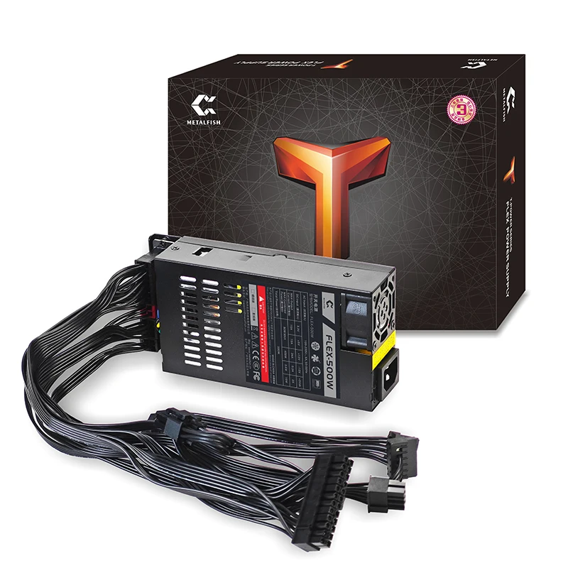

Кастомная itx сборка в JDM стиле
Ryzen 5 5500
Отличный процессор для повседневных, рабочих задач. С любыми играми справится без проблем.
Имея 6 полноценных ядер, 12 потоков, давольно высокую чистоту по всем ядрам 4.3~Gh.
Ссылка на официальный сайт производителя.FROSTFLOW X 120
Водяное охлаждение, с секцией рариатора 120мм.
Отлично справляется с нашим процессором в пассивном режиме. В моей сборке есть два 80мм вентилятора, которые протягивают воздух через корпус. Отдельный вентилятор для охлаждения процессора не требуется.
Температуры процессора не примышают 75 градусов.
Ссылка на официальный сайт производителя.Fatal1ty B450 Gaming-ITX/ac
Среднего уровня плата, есть возможность разгона процессора.
Есть возможность установить более старший проццесор. Например AMD Ryzen™ 7 5700G.
Крутой встроенный звук, WI-FI, Bluetooth.
Другие особенности платы можете посмотреть на сайте производителя.
Ссылка на официальный сайт производителя.XPG Gammix D10
Оперативная память XPG Gammix D10 16 ГБ (8 ГБ x 2 шт.) DDR4 3000 МГц DIMM CL16 AX4U30008G16A-DR10
Среднего уровня ОЗУ с возможность небольшого разгона.
Минимальный для современных задач обьем 16Gb. Меньше не стоит, больше особого смысла не имеет. Только под узкие задачи.
Ссылка на официальный сайт производителя.Видеокарта Nvidia GTX 1660 Super 6Gb
Популярная карты, холодная. Отлично справляется со всеми играми в разрешение 1920*1080. Для 4К нужно подбирать из 4x или 3х тысечной ленейки.
Ссылка на официальный сайт производителя.Тесты производительности
Для тестов я установил игры:
Корпус AeroCool Cs-107-A-BK-v2
Бюджетный, itx корпус. Подвергся доработкам.
Довольно толстый метал, парашковая покраска.
Отвратительный винты в комплекте, сразу были заказаты анадированные красные винты.
Была сделана на заказ крышка из поликарбаната, чтобы была возможность разметить водяное охлаждение.
METALFISH Flex 300w
Доступный flex-atx блок питания.
Обеспечит мощность с запасом для нашей системы. Которая потрибляет суммарно около 180 Ватт.
Обеспечивает комфортый уровень шума при нагрузке.
